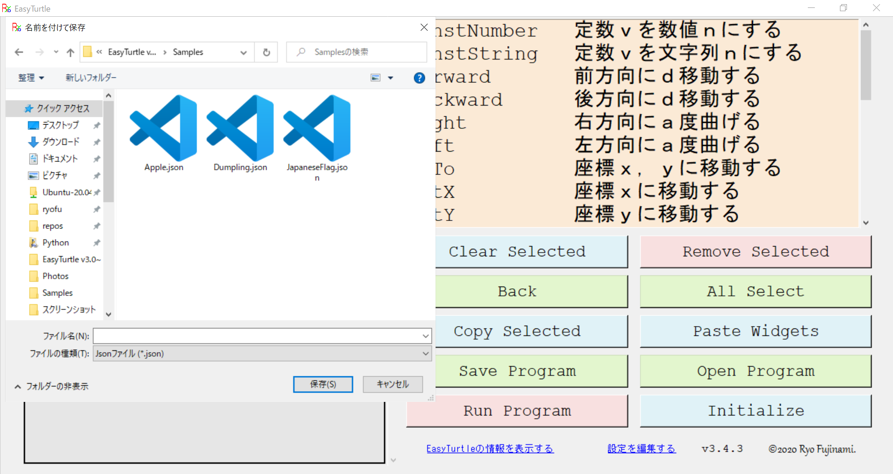
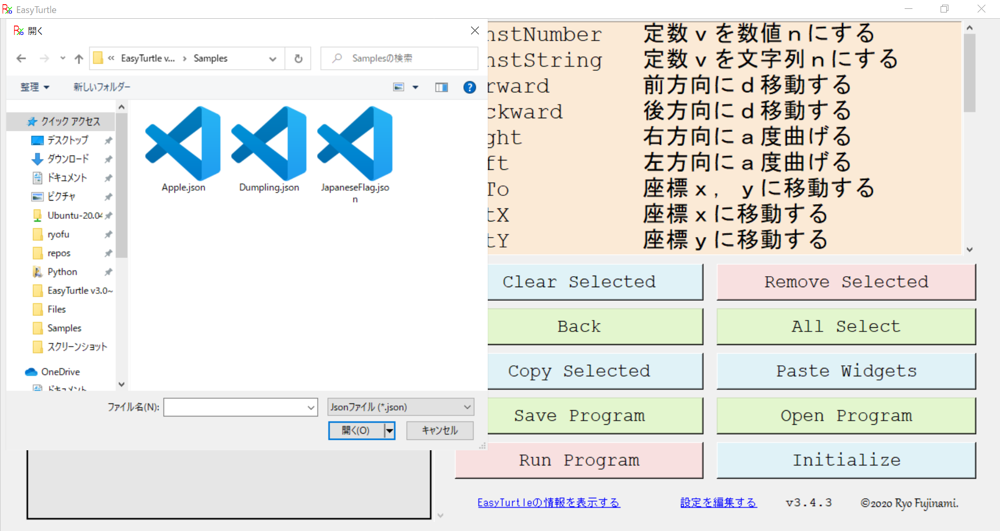

基本説明
ウィジェットを追加する
右側のリストでウィジェットを選択すると左側のリストにウィジェットが追加されます。

ウィジェットを変更する
ウィジェットを右クリックすることでメニューが表示されます。

※注：WriteウィジェットやColorウィジェットにはオプションもついています。
コピー＆ペースト
複数のウィジェットのコピー
Copy Selectedを押すことでコピーすることができます。
複数のウィジェットのペースト
Paste Widgetsを押すことで左側のリストにコピーしたウィジェットを追加できます。
実行する
Run Programを押すと新しいウィンドウが作られ実行されます。

データを保存する
Save Programを押すと保存用ウィンドウが作られファイル名を入れると保存できます。

保存したデータを開く
Open Programを押すと開く用ウィンドウが作られファイルを選択すると開くことができます。

ウィジェットの説明
| ウィジェット | 説明 | ドキュメント |
|---|---|---|
| VarNumber | 変数ｖを数値ｎにする | オリジナル |
| VarString | 変数ｖを文字列ｎにする | オリジナル |
| Forward | 前方向にｄ移動する | turtle.forward |
| Backward | 後方向にｄ移動する | turtle.backward |
| Right | 右方向にａ度曲げる | turtle.right |
| Left | 左方向にａ度曲げる | turtle.left |
| GoTo | 座標ｘ，ｙに移動する | turtle.goto |
| SetX | 座標ｘに移動する | turtle.setx |
| SetY | 座標ｙに移動する | turtle.sety |
| SetHeading | 角度をａ度に変更する | turtle.setheading |
| Home | 初期座標・角度に戻る | turtle.home |
| Circle | 半径ｒの円をｅ度描く | turtle.circle |
| Dot | 直径ｒの円を描く | turtle.dot |
| Stamp | 亀のスタンプを押す | turtle.stamp |
| Speed | 速度ｓに変更する | turtle.speed |
| PenDown | 動いた線を引く | turtle.pendown |
| PenUp | 動いた線を引かない | turtle.penup |
| PenSize | 先の太さをｗにする | turtle.pensize |
| Color | 色をｃに変更する | turtle.color |
| BGColor | 背景色をｃに変更する | turtle.bgcolor |
| BeginFill | 塗りつぶしを始める | turtle.begin_fill |
| EndFill | 塗りつぶしを終える | turtle.end_fill |
| ShowTurtle | 亀を表示にする | turtle.showturtle |
| HideTurtle | 亀を非表示にする | turtle.hideturtle |
| TurtleSize | 亀の大きさをｓにする | turtle.turtlesize |
| Write | サイズｓの文字列ｔを書く | turtle.write |
| Sleep | 操作をｄ秒停止する | time.sleep |
| Comment ※１ | 実行されないコメント文 | オリジナル |
| Undefined ※２ | 情報のない不明なクラス | オリジナル |
※１：このウィジェットはコメント用です。
※２：このウィジェットが表示されたときにはJsonファイルが破損していないか確認してください。
2020/12/09 v4.7 Ryo Fujinami.